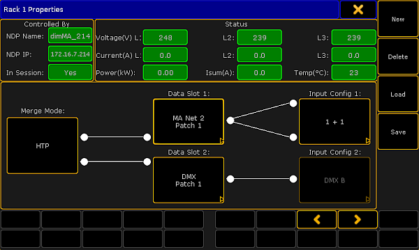
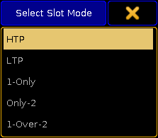
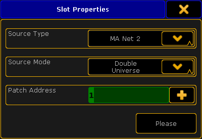
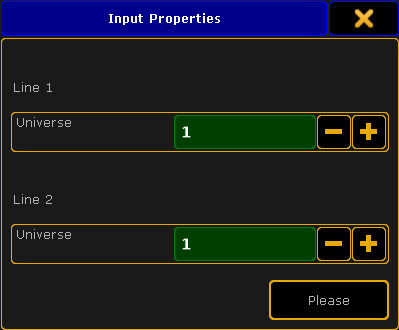
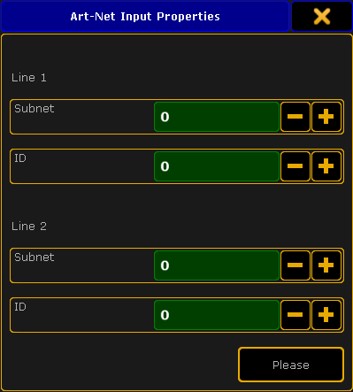
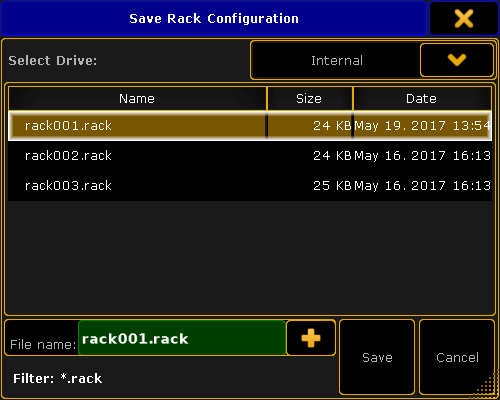
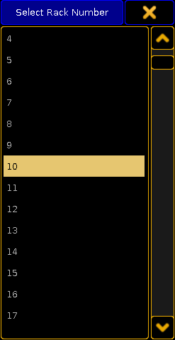
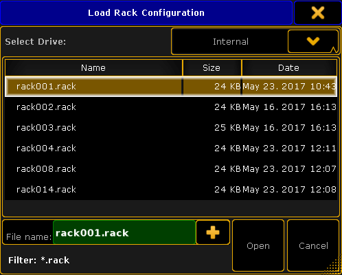

For more information on how to open the MA Dimmer Network see Network dimmer.
To edit the properties of a rack, press Edit and tap a rack. The window Rack Properties opens.

Rack Properties
The upper sections Controlled by and Status cannot be edited. They solely display data such as:
Name of the NDP
IP of the NDP
If NDP is in session
Voltage
Current
Power
A total of the three-phase alternating current
Temperature of the rack
Important:
The lower section displaying the merge mode, data slots and input config can be edited.
To edit the merge mode, tap the button displayed below Merge Mode.
-The pop-up Select Slot Mode opens.

Select merge mode
-Select a mode.
Merge Modes
HTP
Connects both slots. If both slots are active, the slot which values are higher takes precedence.
LTP
Uses both slots. If both slots are active, the slot which values were modified the last takes precedence.
1-Only
Only uses Slot 1.
Only-2
Only uses Slot 2.
1-Over-2
Connects both slots. However, Slot 1 has the higher priority. That is, in case there is a valid signal on Slot 1 (no matter the type), the NDP ignores the signal on Slot 2. If there is no signal on Slot 1 or if the NDP detects a faulty signal on Slot 1, the NDP automatically starts to use Slot 2.
To edit a slot, tap the button displayed below Data Slot 1 and Data Slot 2.
-The pop-up Slot Properties opens.

Adjust slot properties
-To select a source type, tap the drop-down box and tap the corresponding protocol in the list.
-To select a source mode, tap the drop-down box and tap a source mode in the list.
-To enter a patch address, type into the green input field or tap the and the calculator opens.
Now, tap Please.
The properties of the slot are now applied.
Hint:
-To enable 1024 channels for the configuration patch, select Double Universe in the Source Mode and DMX in the Source Type. DMX In 1 and 2 of the NDP are used in one slot.
-If you select Art-Net, MA-Net2 or sACN in the Source Type and DoubleUniverse in the Source Mode, specify the two universes individually.
To edit universes, tap the button displayed below Input Config.
-The pop-up Input Properties opens.

Edit universes
-To edit the universes in Line 1 and Line 2, tap the or or type in the green input field using the keyboard.
-If you have selected Art-Net as the source type, define which Art-Net universe is used. To do so, tap the Input Config and the pop-up Art-Net Input Properties opens.

Adjust the input properties of Art-Net
-Adjust subnet and ID.
Hint:
-Subnet defines the upper 4bits of the Art-Net address. If you enter 0 in subnet, 1 is defined. If you enter 1, 2 is defined.
-ID defines the lower 4bits of the Art-Net address. Entering numbers works the same as in subnet.
After you have edited the properties of the rack, save the settings.
-Tap Save on the right of the window and the pop-up Save Rack Configuration opens.

Save the configuration
-The current rack is marked in a light brown color.
-To save the settings of the current rack, tap Save.
-To cancel the process, tap Cancel or in the upper right corner of the pop-up.
Hint:
Configurations are saved on the desk ending in *.rack. They can either be saved on the internal drive or a USB stick, hence they are not saved in the show file.
To delete a rack, tap Delete.
Important:
Racks can only be deleted if they are not in use or those that just have been created "offline" without the NDP controlling it.
To select the next or the previous rack, tap or .
To create a rack, tap New and the pop-up Select Rack Number opens.

Select rack number
-Select the rack number and edit the newly created rack as described in Rack Properties.
To load an existing rack, tap Load and the pop-up Load Rack Configuration opens.

Load an existing rack
-Select the drive in the drop-down below the heading.
Tap to select a rack and tap Open.
Hint:
It is possible to load racks from an internal drive and previous software versions.
The rack is configured and the settings are applied.